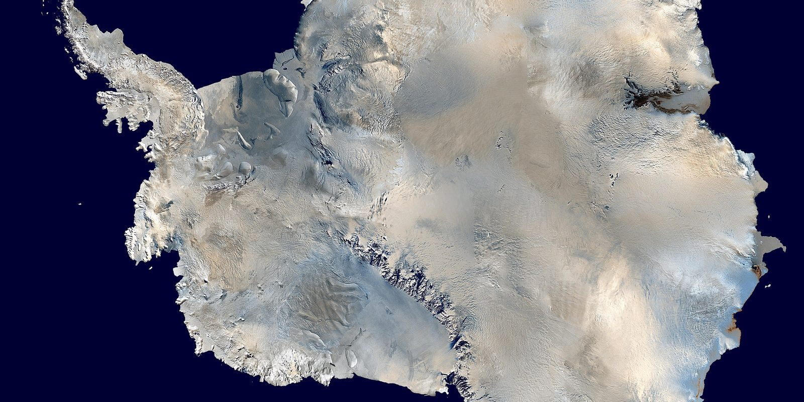

Antarctica Gained 695 Billion Tons of Ice, and the Reason Was Seven Thousand Kilometres Away
SCIENCE & TECHNOLOGY · SEPTEMBER 12, 2026

I try to keep this rule: when a headline number is astonishing, read the paper before deciding what it means. This one earned it. "Antarctica gained a record 695 billion tons of ice" is true, appeared everywhere last week, and will be quoted for years by people who did not read past it. The study behind it, published in Nature on 19 August by a team led by Yunhe Wang at the Institute of Oceanology of the Chinese Academy of Sciences, is more interesting than the headline and points the opposite way from how the headline will be used.
How Do You Weigh a Continent?
The gain was not measured with rulers or photographs. It was weighed. Since 2002 a pair of satellites — first GRACE, then its successor GRACE-FO from 2018 — have flown one behind the other around the Earth, measuring the distance between themselves to a few microns. When the leading satellite passes over something heavy, it is pulled very slightly ahead; when the trailing one crosses the same mass, it catches up. Month by month, the changing distance between them maps where mass on the Earth's surface has moved. It is how we know Greenland is losing ice, how we know the Central Valley's aquifers are being drained, and how the 695-billion-ton figure was obtained.
Between July 2021 and April 2023 the gravity record shows the Antarctic ice sheet getting heavier by roughly 695 gigatons — the largest twenty-two-month gain since the satellites began. Almost all of it landed in one region of East Antarctica, Queen Mary Land and Wilkes Land, the long stretch of coast facing the Indian Ocean. Ice cores drilled there show the same thing from the ground: two years of exceptional snowfall.
Scale. The Antarctic ice sheet weighs on the order of 24 million gigatons. A 695-gigaton gain is about three thousandths of one percent of it. In sea-level terms, 362 gigatons of ice is one millimetre of global ocean; the gain is worth roughly two millimetres of sea level that did not rise during those two years. The losses of the preceding two decades, at the paper's figure of 140.5 gigatons a year, add to about 2,800 gigatons — four times the gain.
Where Did the Snow Come From?
This is the part the paper adds, and it is why it is in Nature. Snow in East Antarctica does not fall because it is cold — it is always cold, and cold air holds almost no water. It falls when the atmosphere delivers moisture from somewhere warmer. The team traced that moisture with water-vapour tracking and found the trigger not in the Southern Ocean but in the tropics: the "tropical warm pool," the pocket of the western Pacific and eastern Indian Ocean that is the warmest open water on the planet. During 2021–23 that pool ran persistently hot.
A hot patch of ocean heats the air above it, the rising air disturbs the jet stream, and the disturbance does not stay put — it travels as a train of ridges and troughs, a Rossby wave, arcing poleward across the Southern Hemisphere. By the time this one reached East Antarctica it had set up a stable pattern the authors call a north–south dipole: high pressure on one side, low on the other, with the air between them flowing steadily from the mid-latitude Indian Ocean straight onto the ice. That flow carried atmospheric rivers — long, narrow bands of water vapour, the same structures that flood California in a wet winter — and where they hit the cold plateau, they dropped their load as snow. For twenty-two months. The paper's phrase is a "previously underrecognized tropical warm pool–East Antarctic Ice Sheet teleconnection pathway," which is the scientific way of saying: nobody had drawn this line on the map before.
Seven thousand kilometres is roughly the distance from that warm pool to Wilkes Land. The weather that added 695 billion tons to Antarctica was made in the tropics.
So Is Antarctica Growing?
No, and the authors say so in nearly every paragraph. The gain is a weather event of unusual size and duration, laid on top of a trend that has been running the other way for the whole satellite era. The trend is driven by something else entirely — warm ocean water melting the undersides of the West Antarctic glaciers where they meet the sea, a process a heavy snowfall on the far side of the continent does nothing to slow. The two years in question were a pause in the running total, not a reversal of it, and by the paper's own accounting the pause was already receding by 2023.
What the study does change is the size of the swings you should expect. If a tropical teleconnection can add 695 gigatons in two years, it can presumably subtract on the same scale in a dry one, and the year-to-year noise in Antarctica's mass is larger than the models had assumed. That matters for anyone trying to detect the trend from a short record — a few years of gravity data, read alone, can point the wrong way. Which is, of course, exactly what the headline invites you to do.
Why Did This One Get So Much Attention?
Partly because the number is enormous and the mechanism is elegant. Partly, I suspect, because "Antarctica gains ice" is a sentence with an audience waiting for it. I noticed that most of the coverage put the 140-gigatons-a-year loss in the last paragraph or not at all, and that the paper's own framing — a teleconnection, a temporary anomaly — was replaced with the word "surprise." It was a surprise in the sense that the source of the moisture was unexpected. It was not a surprise in the sense that anything about the long-term picture had changed. Two different claims, one word.
Where I Could Be Wrong
The mass of the ice sheet and the gigatons-per-millimetre conversion are standard figures, not from this paper, and the "seven thousand kilometres" is my own reading of a map rather than a number the authors give — I would rather state it as an estimate than pretend it is theirs. The long-term loss rate quoted is the paper's; other groups publish somewhat different rates depending on how they treat the slow rebound of the bedrock under the ice, which the gravity satellites see as mass and have to subtract. The direction is not in dispute; the second decimal place is. I am also taking the attribution of the snowfall to the warm pool on the authors' evidence — water-vapour tracing and circulation analysis — which is the kind of causal argument that gets tested by whether the next warm-pool event does the same thing. That test is a few years off.
Sources
- Wang, Y. et al. Nature 656, 897 (19 August 2026). DOI 10.1038/s41586-026-10912-x. Institute of Oceanology, Chinese Academy of Sciences.
- ScienceDaily. Antarctica gained a record 695 billion tons of ice. Scientists found the surprising reason. 6 September 2026. sciencedaily.com
- SpaceDaily. Tropical warm pool drove record Antarctic ice-sheet mass gain. September 2026. spacedaily.com
- NASA / JPL. GRACE-FO: Gravity Recovery and Climate Experiment Follow-On — how the twin satellites weigh ice sheets. gracefo.jpl.nasa.gov